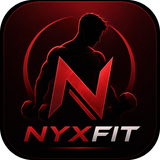
Kein Fertigprogramm.Eines, das nur für dich gebaut wird.
Die meisten Apps zeigen eine Liste fertiger Programme; egal welches du wählst — der Plan ist für alle gleich. NyxFit öffnet keine Liste. Es liest Alter, Gewicht, Körperfettanteil, Erfahrung, Geräte und ggf. Verletzungen und berechnet daraus Kalorien, Makros, wöchentliches Satzvolumen und die Übungsauswahl — in dem Moment.
Das Ergebnis ist nicht ein einzelner Bildschirm: tägliche Ernährungsziele, ein Tag-für-Tag-Trainingsplan, deine Cardio-Dosis, eine Fortschrittstabelle und ein PDF-Bericht für deinen Klienten kommen zusammen.
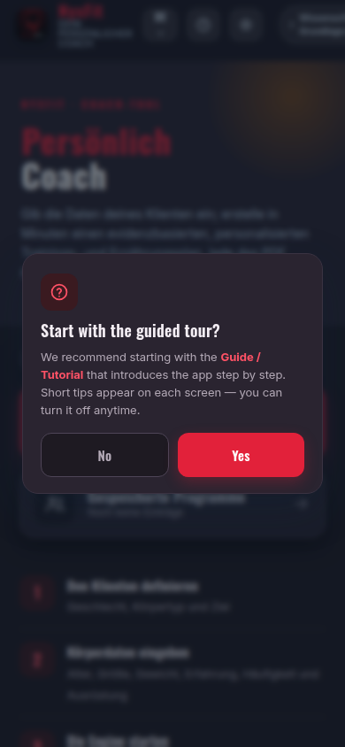
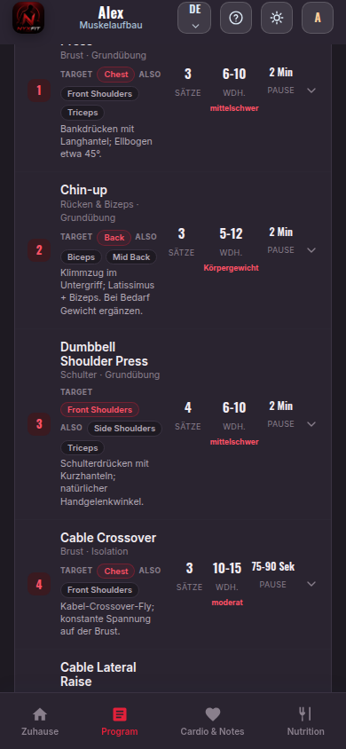

Mit Geschlecht, aktuellem Körpertyp und Ziel starten. Die Körpertyp-Wahl setzt die Fettanteil-Schätzung und die Richtung des Plans.
Alter, Größe, Gewicht, Erfahrung, Trainingstage pro Woche, Geräte und ggf. Verletzungen. Dauert nur wenige Minuten.
Energiebedarf, Makros, wöchentliches Satzvolumen und passende Übungen werden gleichzeitig festgelegt.
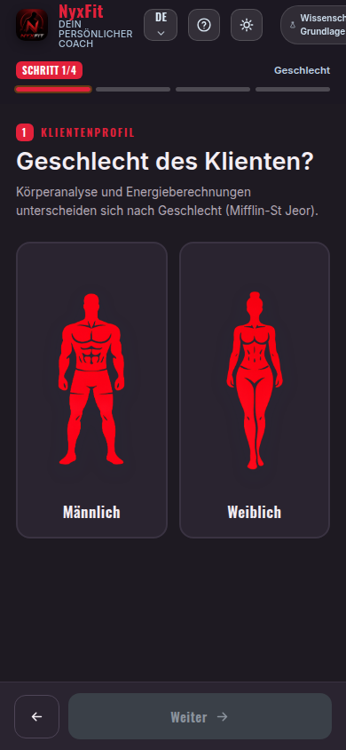
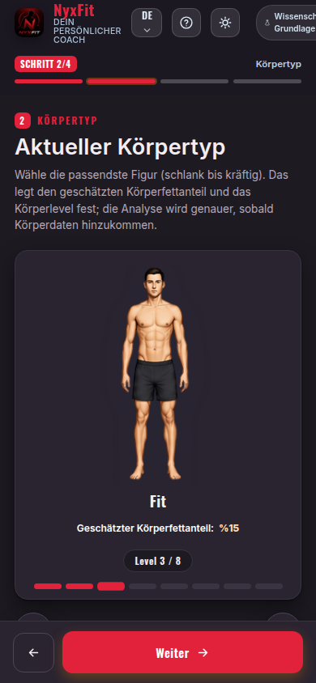
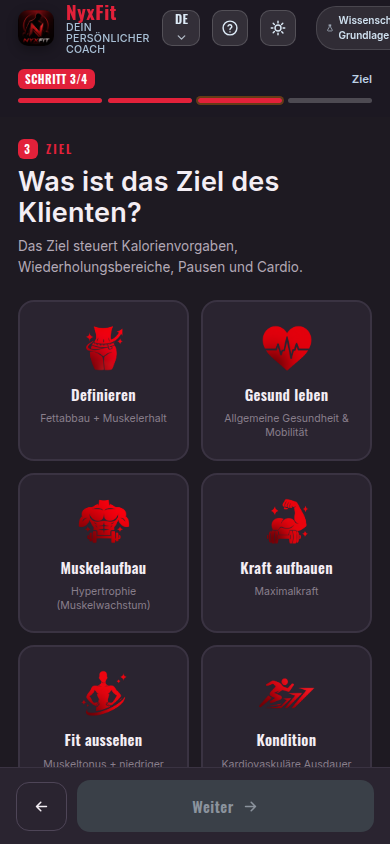
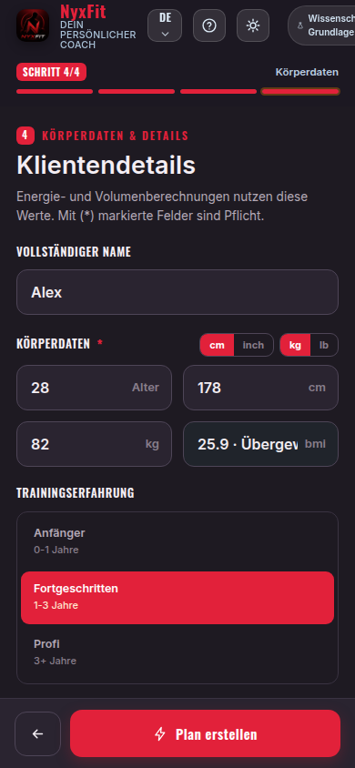
Die Zahlen werden für dich berechnet
Dein täglicher Energiebedarf ergibt sich aus Alter, Größe, Gewicht und Geschlecht. Körpertyp und Fettanteil entscheiden, wohin die Kalorien gehen: Defizit, Überschuss oder Erhalt.
Will jemand mit hohem Körperfett Muskelmasse aufbauen, gibt die App keinen reinen Überschuss — sie stellt auf Rekomposition um und erklärt den Grund auf dem Bildschirm. So baust du Muskeln auf, während du Fett verlierst.
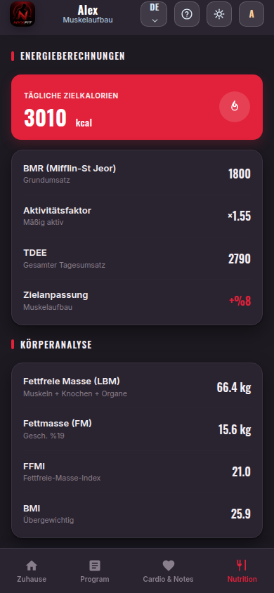
Makros und Tagesziele
Protein, Kohlenhydrate und Fett werden nach Ziel und Körperzusammensetzung aufgeteilt. Im Defizit wird Protein über die fettfreie Masse berechnet — der Ansatz, der Muskel am besten schützt.
Tägliche Ballaststoff- und Wasserziele, Protein pro Mahlzeit und situationsbezogene Ernährungshinweise gehören zum Plan.
Wochenplan, Tag für Tag
Du sagst, an wie vielen Tagen du trainieren kannst; die App baut den Split (Ganzkörper, Ober-/Unterkörper, Push-Pull-Legs) und setzt den Fokus jedes Tages.
Jede Übung trägt Sätze, Wiederholungsbereich und Pause. Der einzeilige Technikhinweis darunter sagt, was zu tun ist; RPE- und RIR-Ziel sind für jeden Tag angegeben.
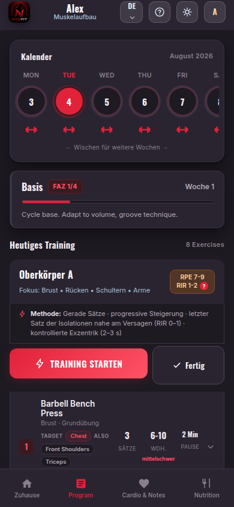
Tage und Zielregionen
Trainingstage stehen in Tabs — so siehst du auf einen Blick, welcher Tag welche Region trainiert.
Willst du eine Region vorziehen, markierst du sie; diese Muskelgruppe erhält Extra-Volumen, ohne die Balance zu stören. Übungen, die eine als verletzt gemeldete Region belasten, kommen gar nicht erst in den Plan.
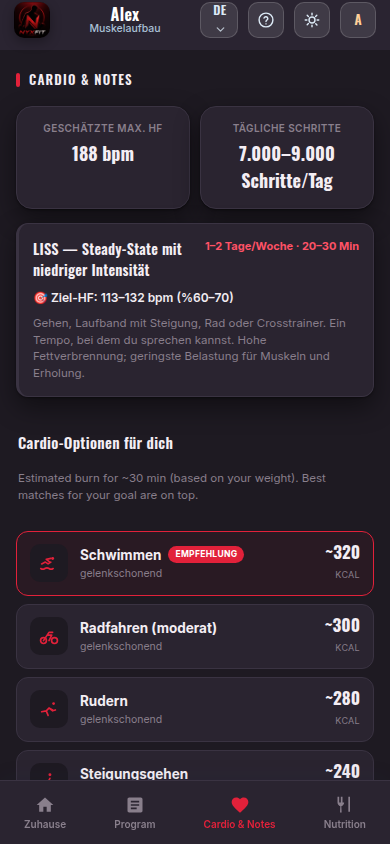
Jede unpassende Übung tauschen
Sind Geräte belegt, passt die Bewegung nicht oder etwas tut weh, öffnest du die Alternativenliste. Sie zeigt Optionen, die denselben Muskel im gleichen Bewegungsmuster und mit deinen Geräten trainieren.
Sobald du wählst, passen sich Sätze, Wiederholungen und Pause an; PDF und Trainingsprotokoll aktualisieren sich. Zur empfohlenen Übung kannst du jederzeit zurück.
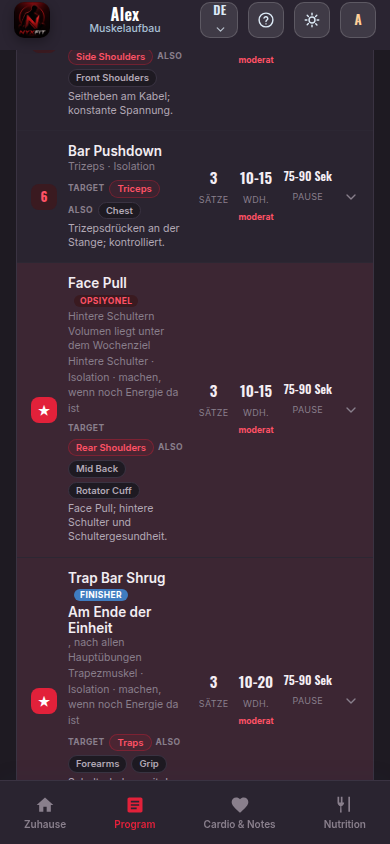
Während des Trainings an deiner Seite
Du öffnest das Telefon und hakst Sätze einzeln ab. Gewicht und Wiederholungen trägst du ein; der Pausen-Timer startet von selbst.
Was du protokollierst, wird zum Vorschlag der nächsten Woche: erreichst du die obere Wiederholungsgrenze, wird Laststeigerung empfohlen; in einer Deload-Woche erscheint reduziertes Gewicht.
4-Wochen-Zyklus: drei Wochen schrittweiser Aufbau, Peak-Woche, dann Deload. Die App weiß, in welcher Woche du bist, und passt die Last selbst an.
Über 12 Wochen werden Gewicht, Taille, Brust, Hüfte, Körperfett, Energie, Schlaf und Leistung erfasst; die Veränderung zur ersten Woche erscheint im Diagramm.
Profilanalyse, Kalorien- und Makroaufschlüsselung, Wochenplan, Cardio-Plan und Tracking-Tabelle in einer Datei. Professionelle Ausgabe für deinen Klienten.
Programm und Messverlauf jedes Klienten speicherst du getrennt; aus der Liste öffnen, aktualisieren oder löschen.
Kalorien, Protein, Volumen, Pause… die Studie hinter jeder Zahl siehst du in der App.
Daten bleiben auf dem Gerät. Backup mit einem Tippen, auf dem neuen Telefon wiederherstellen. Kein Konto, keine Cloud.
Deutsch
Volle Unterstützung in drei Sprachen: Oberfläche, Trainerhinweise, Ernährungstexte, Technikhinweise zu allen 309 Übungen und wissenschaftliche Belege. Mit dem Sprachbutton in der oberen Leiste wechselst du sofort — gespeicherte Programme und Messungen bleiben erhalten.
Deine Daten bleiben auf dem Gerät. Kein Konto, kein Upload in die Cloud — ein Backup machst du, wann immer du willst.